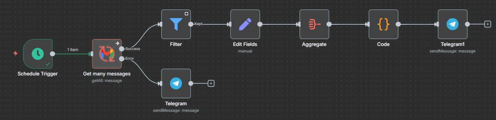
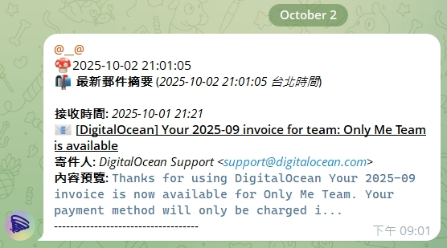

別讓重要訊息，淹沒在信海裡
我如何打造一個 24/7 的自動化資訊管家，每日過濾上百封郵件，只為您呈現最重要的 1%，從根本解決數位資訊焦慮。
The Challenge: 無盡的信箱與錯失的恐懼
每天，我們的信箱都被廣告、電子報和無關緊要的通知淹沒。而真正重要的資訊——帳單、預約確認、付款收據——卻隱身其中，一不小心就會錯過。
時間浪費
每天花費大量時間在重複的篩選、刪除動作上，只為了找到那幾封關鍵郵件。
錯失風險
錯過繳費期限、重要通知的潛在後果，可能導致不必要的罰款或損失。
心力耗損
持續的「信箱檢查」動作打斷專注力，造成無形的數位焦慮與精神負擔。
The Solution: 專屬的個人資訊管家
我利用 n8n 打造了一個全自動的「資訊管家」，它像一個忠誠的秘書，在幕後默默為我工作，確保我不再錯過任何重要訊息。
自動化運作藍圖
資訊管家的大腦：定時啟動，自動登入 Gmail 掃描，根據我設定的關鍵字（如「帳單」、「收據」）進行智慧過濾，最後生成報告。
每日摘要成果
這是我每天收到的最終報告。所有重要郵件被整理成一份清晰的摘要，並透過 Telegram 推送到我的手機，讓我一目了然。
The Impact: 奪回時間與專注力
這個小工具帶來不成比例的巨大效益，徹底改變了我處理數位資訊的方式。
時間的解放
+50小時/年
每日省下約10分鐘篩選郵件的時間，一年累積超過50小時，能投入更高價值的事務。
零錯失風險
100%
自動化確保所有關鍵郵件都被捕捉，再也不用擔心遺漏帳單或重要通知。
專注力回歸
-90%
減少了「必須檢查信箱」的心理負擔與頻率，讓我可以長時間專注於深度工作。
技術核心：打造個人化的郵件過濾網
這個 n8n 工作流的目標，就是扮演一個忠實的秘書，每天在我指定的時間，幫我完成郵件的篩選與彙報工作。它的運作流程如下：
- 定時觸發 (Schedule Trigger): 每天晚上 9 點，工作流會自動啟動，開始一天一次的郵件檢查任務。
- 讀取未讀郵件 (Gmail Node): 首先，它會登入我的 Gmail，並且只抓取「未讀」的郵件，避免重複處理已經看過的信件。
- 關鍵字過濾 (Filter Node): 我設定了多組關鍵字，例如「收據」、「帳單」、「重要」等。只有郵件主旨符合這些關鍵字的信件，才能進入下一個階段。
- 格式化報告 (Code Node): 將所有篩選出來的郵件，整理成一份乾淨、易讀的 HTML 格式通知，並加上 Emoji 分類，讓其一目了然。
- 即時推播 (Telegram Node): 最後，這份精美的摘要報告會透過 Telegram Bot，準時推送到我的手機。